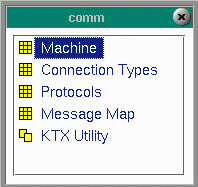

|
The communications menu provides access to the tables that set up the information FortnaPlus© needs to communicate with other systems or hardware devices that send or accept data. Click on any of the links below for further information.
|
 |
Copyright © 2001 Fortna Inc. All rights reserved.